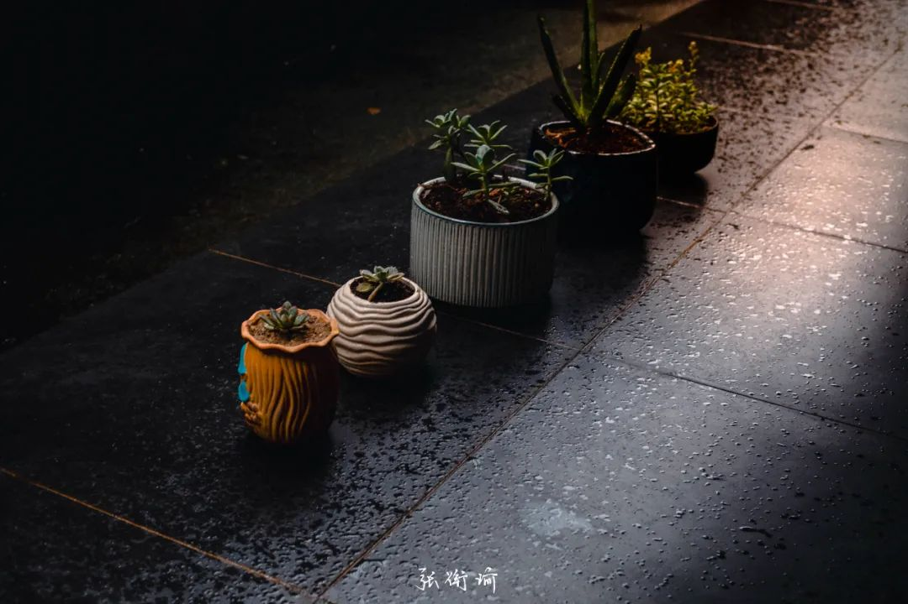

本文是张衔瑜第230篇推文
共计2720个字，5张图
觉得很久没有写了。无论是在公众号还是别的什么地方。往常总会在不同的地方留下一点什么，譬如往期总是从备忘里面摘内容出来，或者移花接木一下，从某个平台的状态里拿一点出来。当然这些最近都没有发生。
其实还有的情况是，和朋友进行有效的观点沟通。这是我大一的时候评论有关辩论赛形制时提到的，双方极尽辩才也分出输赢之后，退下辩论场上必须坚持立场的竞技原则，来回归原本地探讨辩题自身的内涵。
有段时间，我经常和朋友进行这样的有效讨论。在这些讨论中提升很快，而且是朋友就会知道，即使在有些问题上目前无法达成一致，但我们也可以饶有兴致地观察对方的推理和观点是否会因为年岁与经验增长而发生变化。这更吸引人。
最近都没有这样的讨论。如果让我换一个表达方式的话，那要说成，最近是失语的。
几万年前在粉店里嗦粉，一位顾客和老板娘聊天。两个人听口音就知道来自不同的县市，尽管口音都属于长益片(也说不定靠湘潭)，但都不是市区口音。于是对话↓
老板娘：“礼姓什么啊？”
顾客：“我姓荀。”
“寻找的寻啊？”
（笑）“是邢！”
“行人的行啊？”
（端了粉先嗦一口）“姓云咧！哦得了咯”
“你是不是姓容易的容？”
······
“是下面有四点的那个形噻”（手比划）
所以这个人其实是姓大熊猫的那个熊。
说说最近看的书吧。两本大部头终于看完了，一本是德意志第三帝国三部曲的第二本《当权的第三帝国》，还有一本是荣格的《红书》。本来说好了下一本要读《无声告白》或者是《错宴》，但是由于上次出门顺手带书的时候顺的不是这两本之一，所以现在在读的是刘擎《西方现代思想讲义》。
当然不需要蛮严格。因为上一次的推文里我已经提到看完了那一本当权的第三帝国。说来说去，一个国家处在雄心勃勃的备战时期，我认为并不能把所有的事情都归到备战上。一个国家被战争狂人把控的时候是可怕的。与此同时，部分政策也对国家有像注射运动员激素一样，大步往前冲。只是一些仁厚的政治家不用，一些恶向胆边生的政治家急用。分析政治光谱时，只把这当作职业的大部分人都在中间。
承接三部曲的下一本，就到了战时的第三帝国。刘擎在《西方现代思想讲义》中特别提到中文翻译中对于“平庸之恶”一词的误解。
回到原文，平庸之恶应为banality of evil，这个词的意思是 something that lacks originality, freshness, or novelty; the quality or state of lacking new or interesting qualities.
例句
The trip offers an escape from the banalitiesof daily life.
The writing never rose above banality.
用鲁迅式直译/硬译的方式翻成中文，就是恶的平庸性，或者泛化至屡见不鲜的恶。很多人搞不清这个，就按照中文平庸之恶去猜度。很明显就是不读原文的人，和把“差强人意”之类的词语用错，理念同出。
类比我专业内的书籍来看三部曲，抛开是教科书这一点来看的话，就非常像邢大本。有关邢大本的评论，非我专业同学或可自行搜索。不在话下。
另外一本荣格的《红书》，白话说，这就是一本成年人的绘本。说到这里就定性了。我之前读过一段时间，因为一次清理房间而收纳到柜子里以致于我有很久没有看见它。终于拿出来在前几天看完了。
既然是绘本，肯定有画画有文字。我说这是成年人绘本，是因为荣格自己在搞精神分析的时候也根据自己的梦境画了很多乱七八糟的东西。前面几章荣格还饶有兴致地好好讲道理，后面就和唯意志论的尼采玩到一起了，让我回想起高二的时候读《查某说事》。
荣格后来就和三部曲之二的人一样，开始让我觉得节奏起跳。前边还在听古琴《鸿雁》，后边就在刺猬《生之响往》。出版商疯狂加注释。加了注释只不过是变成了解说流，荣格自己都开始意识流了。懒得写，于是整版整版的都是画的画。画到曼陀罗频繁出现让我想起在敦煌。附录里有荣格的手稿，看起来出版时还补充了不少。
至于正在读的刘擎《西方现代思想讲义》，约莫是一本成年人的《哈佛家训》。哈佛家训是讲了个故事，又在侧边栏跟你讲个道理。以前我很熟这一套，小时候拿到第一本，我任意翻开一页都知道那里面说了些什么。刘擎这一本也在做类似的尝试，看如何在浩瀚的思想史海洋中复原那思想与现代社会的草蛇灰线。
看前言，刘擎认为自己这本是可以作为文史哲工作者常备的参考书，所以才在书上命名为讲义。因为我没有对网络公开课有什么关注，所以在看内容的时候才知道这是一门得到APP开的课。于是这本书通体没有其他的哲学类书籍那么难看明白，比如不像卢梭是乱写的、比如不像尼采在写诗，反而接近我以前看资中筠翻译的the Consolation of Philosophy.
上述讨论的平庸之恶，以及我正在看的讲亨廷顿与福山之间有关世界文明、政治秩序构建的冲突（他们本来是师生），又将我之间雾里看花的一些概念重新擦亮了一下。蛮好，是一本很好的睡前读物。
应该要做点笔记。就像不断回顾的生活一样。极端起来是很容易的，甚至只是远眺看见天边有一点。往后梳理是困难的。于是有大踏步去崖边，也有给后路放烟幕弹。曾经在年初要开两会的时候，掀起一波提案与立法思考的风潮。我觉得蛮好。而这次目前还没有看到有人提及。为什么呢？
叙述故事在一个自然段内，没有旁逸斜出的时间地点人物和事件，一个故事就坐上了普适化车。我看很多人跟我说的话，就好像是呼救时的咒骂。而对于困境的求解呢？和上段我最后提的那个问题一样，能多转几路弯的脑子里，自然都有本谱。虽然谱与谱也许不一样，但是只要都是在转了几路的地方、只要能交流沟通，我总是很愿意像这次推文最开始所说的那样一起做一个观测小实验。不过这样的故事越来越少了。
生活不止有读书。但是我好难想起来读完了书，我在干什么。
好朋友跟我说，你摸鱼的时候就打开微信的文件传输助手，把小想法写在那个微信文件传输助手里，这样就可以了。所以从里面又翻出来了一点原汤化原食的东西。
农历四月的最后一天，五毒醒，一只蜈蚣爬进了盥洗室。
出门采购，在干货店找到了雄黄香和雄黄粉。
时间在晚餐过后，摊主们已经开始分拣、捆扎明天要上桌的艾草和菖蒲。
气味一闻到，节日就开始了。
干货店老板尝试向我说明雄黄怎么兑黄酒调开，一杯在小孩头上写王字，一杯加蒜耔给小孩喝。
老板为什么会觉得我有小孩我们不得而知，但我脑子里想的是潘金莲用雄黄酒毒杀武大郎，宋三郎怒杀阎婆惜。
回家路上，懂节庆的邻居和路人都问“就买香了啊？”我说是。
就火点上，烟雾缭绕。
十方铁炉寺

去乡下吃席。排开四十五纹大碗，依次盛入一方浅割扣肉皮、几贯五花肉和豆豉辣椒。上蒸锅，待入席时反扣上桌，则扣肉皮在面上，豆辣味在中。

/
摘蓝莓
/
一位故人来长沙，三年前经常出现在公众号，比如这篇私奔，在武昌汉口的生活里。我才发现今年好像都没有去楼顶看过夕阳。三年前的时候，空余时间除了在西操和排球队大家一起玩之外，就是和这位故人在武汉走街串巷，不知道去了多少楼顶、看了多少次夕阳。
又到楼顶，放着也是那时候听的歌：
飞机飞过天空，天空之城
落雨下的黄昏的我们
此刻我在异乡的夜里
感觉着你忽明忽暗